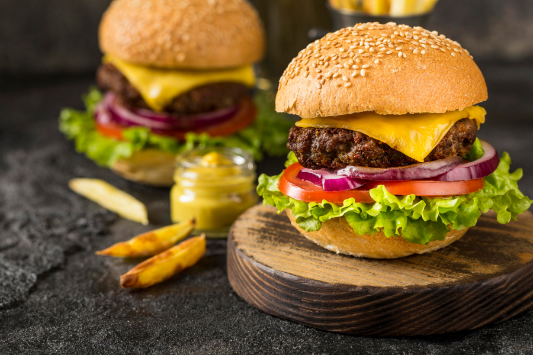
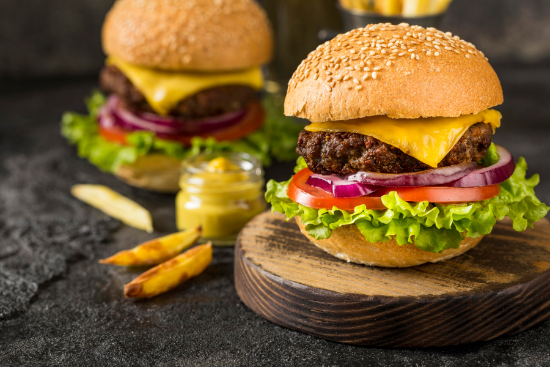
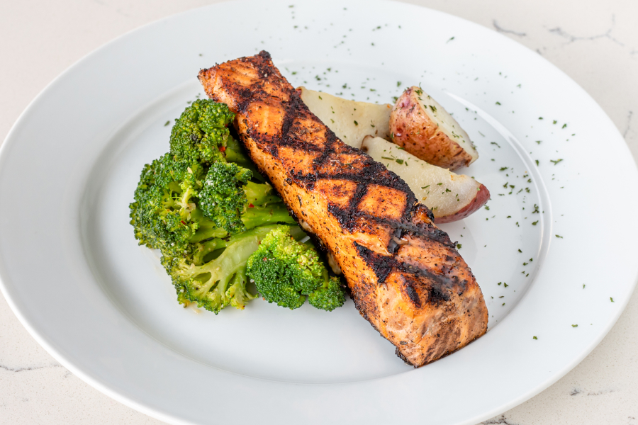
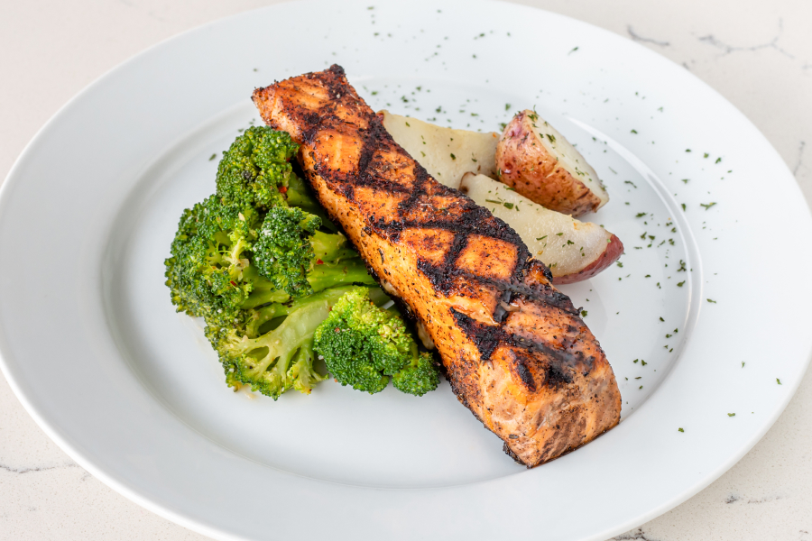
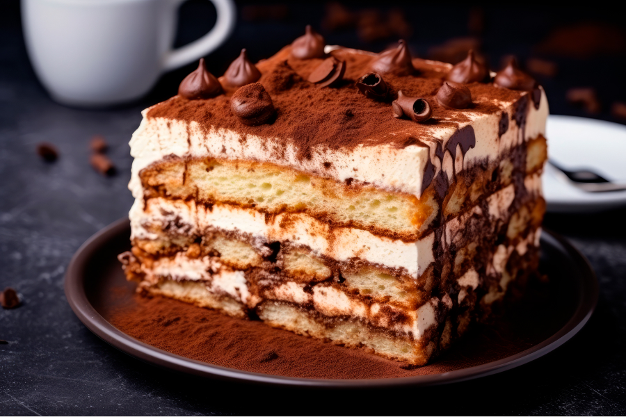
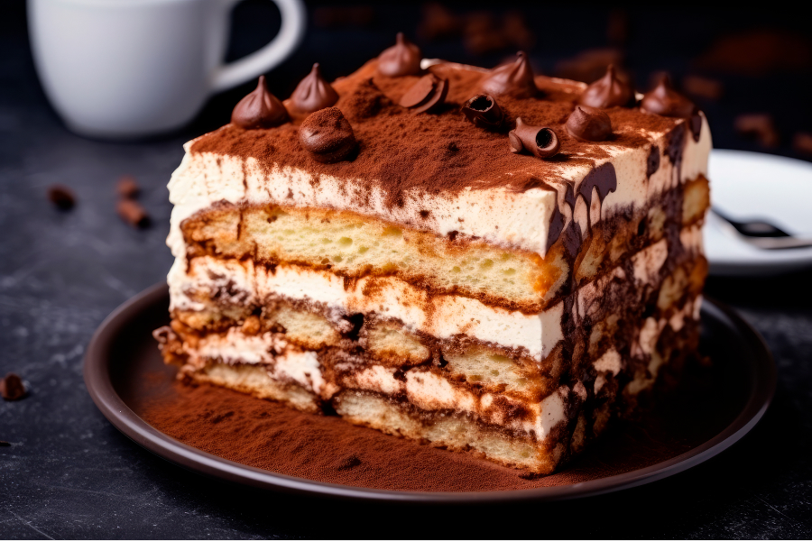

 

 


About Us
Local Restaurant, the ultimate destination for a unique dining and entertainment experience, now has five locations in Cambridge, Kitchener, and Windsor, Ontario. We aim to introduce a groundbreaking concept that fuses Asian flavors, the bar atmosphere, and the vibrant energy of a relaxed club, all under one roof.
Our journey began with a passion for bringing people together through food, music, and unforgettable ambiance. We take pride in serving a menu inspired by the diverse and rich culinary traditions of Asia, prepared with a modern twist to delight your taste buds. From the fresh sushi platters to sizzling stir-fries, every dish is crafted with the finest ingredients and utmost care.
At Local Restaurant, we believe dining is more than just eating, it's about creating memories. Whether you're gathering with friends for a night out, celebrating a special occasion, or simply exploring new flavors, we provide a space where everyone feels welcome.